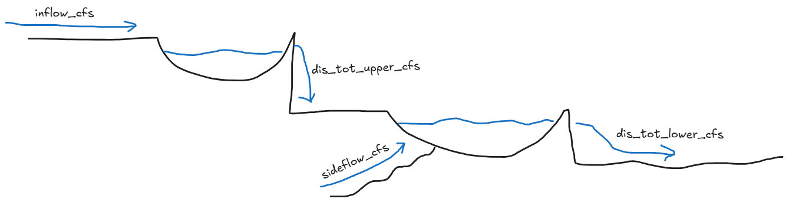
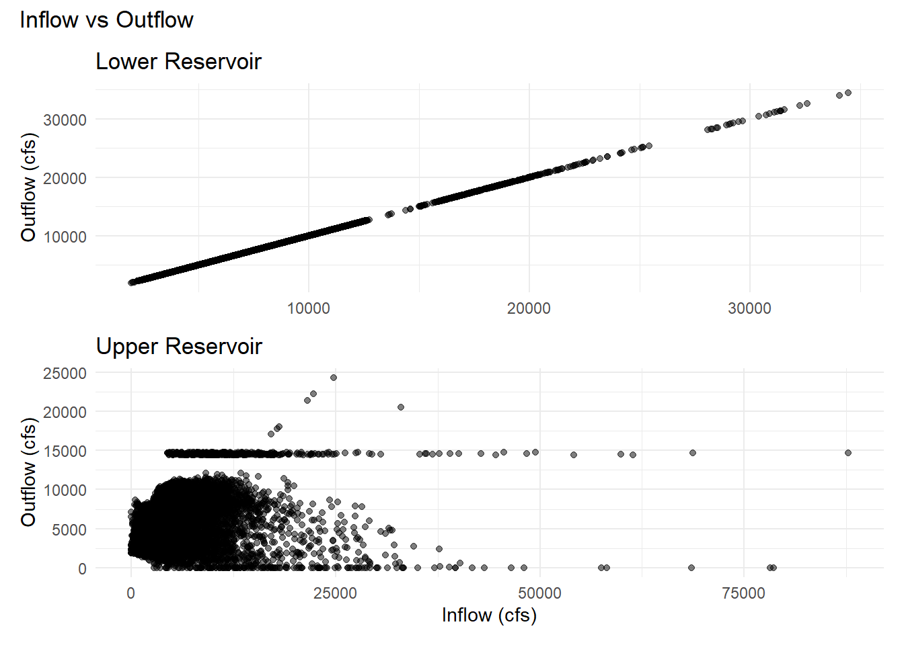
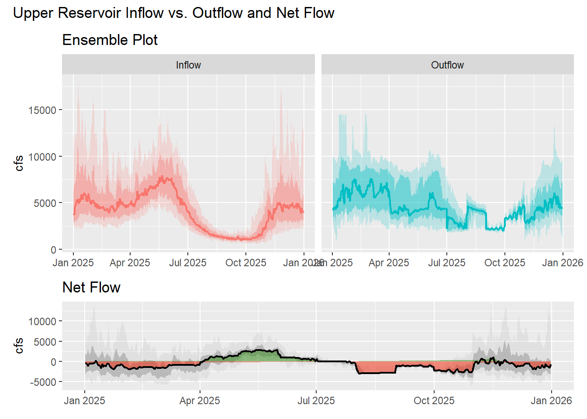
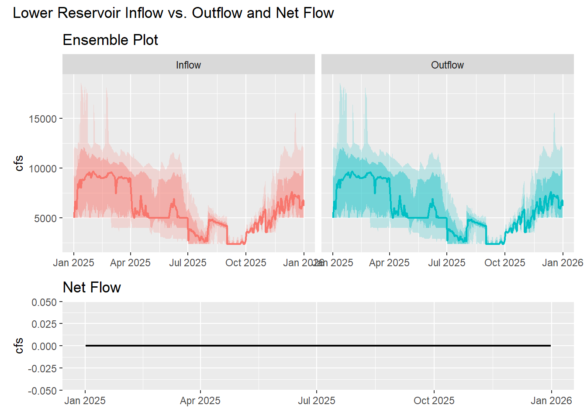

Code
library(dplyr)
library(tidyr)Upper and Lower Reservoir Inflow, Outflow, and Net FLow
This report explores inflow and outflow across 44 hydrologic simulation scenarios for a hypothetical two reservoir cascading hydro project. This report walks you through my thought process from initial data exploration and understanding to inflow-versus-outflow comparisons, ensemble median and percentile bands, and net-flow balance plots.
Dplyr and tidyr are used for data wrangling and manipulation.
library(dplyr)
library(tidyr)ggplot2 and patchwork are used for plotting and combining plots.
library(ggplot2)
library(patchwork)Nanoparquet is used to read the parquet file.
library(nanoparquet)
######################################
## Load inflow_outflow_dataset data ##
######################################
inflow_outflow_dataset <- read_parquet("inflow_outflow_dataset.parquet")
flow_summary <- inflow_outflow_dataset %>%
mutate(lower_inflow_cfs = sideflow_cfs + dis_tot_upper_cfs) %>%
select(inflow_cfs, dis_tot_upper_cfs, lower_inflow_cfs, dis_tot_lower_cfs) %>%
pivot_longer(
cols = everything(),
names_to = "Flow",
values_to = "cfs") %>%
mutate(Flow = recode(Flow, inflow_cfs = "Upper Inflow", dis_tot_upper_cfs = "Upper Outflow", lower_inflow_cfs = "Lower Inflow", dis_tot_lower_cfs = "Lower Outflow")) %>%
group_by(Flow) %>%
summarise(
Min = min(cfs, na.rm = TRUE),
Max = max(cfs, na.rm = TRUE),
Mean = mean(cfs, na.rm = TRUE),
Median = median(cfs, na.rm = TRUE),
.groups = "drop") %>%
mutate(across(where(is.numeric), ~ round(.x, 2)))
flow_summary# A tibble: 4 × 5
Flow Min Max Mean Median
<chr> <dbl> <dbl> <dbl> <dbl>
1 Lower Inflow 1976 34447. 6264. 5000
2 Lower Outflow 1976 34447. 6264. 5000
3 Upper Inflow 0 87755 4886. 3899.
4 Upper Outflow 0 24325. 4891. 4131.lower_reservoir_scatter_plot <- inflow_outflow_dataset %>%
mutate(sum_lower_reservoir_inflow = sideflow_cfs + dis_tot_upper_cfs) %>%
ggplot(., aes(x = sum_lower_reservoir_inflow, y = dis_tot_lower_cfs)) +
geom_point(alpha = 0.5) +
labs(title = "Lower Reservoir",
y = "Outflow (cfs)") +
theme_minimal() +
xlab(element_blank())
upper_reservoir_scatter_plot <- inflow_outflow_dataset %>%
ggplot(., aes(x = inflow_cfs, y = dis_tot_upper_cfs)) +
geom_point(alpha = 0.5) +
labs(title = "Upper Reservoir",
x = "Inflow (cfs)",
y = "Outflow (cfs)") +
theme_minimal()
combined_plot <- lower_reservoir_scatter_plot / upper_reservoir_scatter_plot +
plot_layout(heights = c(1, 1)) +
plot_annotation(title = "Inflow vs Outflow")
combined_plot
An intial review of the inflow versus outflow scatter plots shows that the lower reservoir inflow and outflow follow a 1:1 relationship, while the upper reservoir inflow and outflow show a more complex relationship. From these intial scatter plots, I began to draw some hypotheses about how the upper and lower reservoirs might be operated particularly in terms of storage and operating rules.
Operating rules: There is a clear horizontal line around the 15000 cfs mark with a few outliers above that mark and a most other points falling below that mark. This suggests that the upper reservoir may have a maximum outflow limit of around 15000 cfs, and that the operating rules may be designed to maintain outflows below this limit. Additionally, further exploration of the data shows days where upper reservoir outflow is 0 suggesting that there is no minimum outflow requirement for the upper reservoir.
Storage Capacity: Outflow and inflow are not a 1:1 relationship, indicating that the upper reservoir has the ability to store water.
Operating rules: The 1:1 relationship and the exact mean and median values for inflow and outflow suggest that the lower reservoir operates on a run of the river basis, with little regulation of outflows.
Storage Capacity: The run of the river hypothesis suggests that the lower reservoir has little to no storage capacity.
####################################
## Upper Reservoir Ensemble Plots ##
####################################
upper_reservoir_ensemble_plot <- inflow_outflow_dataset %>%
pivot_longer(cols = c(inflow_cfs, dis_tot_upper_cfs), names_to = "variable", values_to = "value") %>%
mutate(variable = recode(variable, inflow_cfs = "Inflow", dis_tot_upper_cfs = "Outflow")) %>%
group_by(dt, variable) %>%
summarise(
median_flow = median(value),
p10 = quantile(value, 0.10),
p25 = quantile(value, 0.25),
p75 = quantile(value, 0.75),
p90 = quantile(value, 0.90)) %>%
ggplot(., aes(x = dt, color = variable, fill = variable)) +
geom_ribbon(aes(ymin = p10, ymax = p90), alpha = 0.2,color = NA) +
geom_ribbon(aes(ymin = p25, ymax = p75), alpha = 0.4,color = NA) +
geom_line(aes(y = median_flow), linewidth = 0.75) +
labs(title = "Ensemble Plot", y = "cfs") +
xlab(element_blank()) +
facet_wrap(~ c(variable)) +
theme(legend.position = "none")
upper_reservoir_netflow <- inflow_outflow_dataset %>%
mutate(net_upper_reservoir = inflow_cfs - dis_tot_upper_cfs) %>%
group_by(dt) %>%
summarise(
median_netflow = median(net_upper_reservoir),
p10 = quantile(net_upper_reservoir, 0.10),
p25 = quantile(net_upper_reservoir, 0.25),
p75 = quantile(net_upper_reservoir, 0.75),
p90 = quantile(net_upper_reservoir, 0.90)) %>%
ggplot(., aes(x = dt)) +
geom_ribbon(aes(ymin = p10, ymax = p90), alpha = 0.2,fill = "gray70") +
geom_ribbon(aes(ymin = p25, ymax = p75), alpha = 0.4,fill = "gray50") +
geom_ribbon(aes(ymin = pmin(median_netflow, 0), ymax = pmax(median_netflow, 0), fill = median_netflow >= 0), alpha = 0.5) +
geom_line(aes(y = median_netflow), linewidth = 0.75) +
scale_fill_manual(values = c("TRUE" = "#2f8a13","FALSE" = "#f32408")) +
labs(title = "Net Flow", y = "cfs") +
xlab(element_blank()) +
theme(legend.position = "none")
combined_plot <- upper_reservoir_ensemble_plot / upper_reservoir_netflow +
plot_layout(heights = c(2, 1)) +
plot_annotation(title = "Upper Reservoir Inflow vs. Outflow and Net Flow")
combined_plot
####################################
## Lower Reservoir Ensemble Plots ##
####################################
lower_reservoir_ensemble_plot <- inflow_outflow_dataset %>%
mutate(sum_lower_reservoir_inflow = sideflow_cfs + dis_tot_upper_cfs) %>%
pivot_longer(cols = c(sum_lower_reservoir_inflow, dis_tot_lower_cfs), names_to = "variable", values_to = "value") %>%
mutate(variable = recode(variable, sum_lower_reservoir_inflow = "Inflow", dis_tot_lower_cfs = "Outflow")) %>%
group_by(dt, variable) %>%
summarise(
median_flow = median(value),
p10 = quantile(value, 0.10),
p25 = quantile(value, 0.25),
p75 = quantile(value, 0.75),
p90 = quantile(value, 0.90)) %>%
ggplot(., aes(x = dt, color = variable, fill = variable)) +
geom_ribbon(aes(ymin = p10, ymax = p90), alpha = 0.2,color = NA) +
geom_ribbon(aes(ymin = p25, ymax = p75), alpha = 0.4,color = NA) +
geom_line(aes(y = median_flow), linewidth = 0.75) +
labs(title = "Ensemble Plot", y = "cfs") +
xlab(element_blank()) +
facet_wrap(~ c(variable)) +
theme(legend.position = "none")
lower_reservoir_netflow <- inflow_outflow_dataset %>%
mutate(sum_lower_reservoir_inflow = sideflow_cfs + dis_tot_upper_cfs) %>%
mutate(net_lower_reservoir = sum_lower_reservoir_inflow - dis_tot_lower_cfs) %>%
group_by(dt) %>%
summarise(
median_netflow = median(net_lower_reservoir),
p10 = quantile(net_lower_reservoir, 0.10),
p25 = quantile(net_lower_reservoir, 0.25),
p75 = quantile(net_lower_reservoir, 0.75),
p90 = quantile(net_lower_reservoir, 0.90)) %>%
ggplot(., aes(x = dt)) +
geom_ribbon(aes(ymin = p10, ymax = p90), alpha = 0.2,fill = "gray70") +
geom_ribbon(aes(ymin = p25, ymax = p75), alpha = 0.4,fill = "gray50") +
geom_ribbon(aes(ymin = pmin(median_netflow, 0), ymax = pmax(median_netflow, 0), fill = median_netflow >= 0), alpha = 0.5) +
geom_line(aes(y = median_netflow), linewidth = 0.75) +
scale_fill_manual(values = c("TRUE" = "#2f8a13","FALSE" = "#f32408")) +
labs(title = "Net Flow", y = "cfs") +
xlab(element_blank()) +
theme(legend.position = "none")
combined_plot <- lower_reservoir_ensemble_plot / lower_reservoir_netflow +
plot_layout(heights = c(2, 1)) +
plot_annotation(title = "Lower Reservoir Inflow vs. Outflow and Net Flow")
combined_plot
Upper Reservoir: The ensemble plots show that the upper reservoir has a maximum outflow limit of around 15000 cfs, with a few extreme scenarios exceeding this limit. The net flow plot shows that the upper reservoir has the ability to store and release water as conditions demand, with periods of both positive and negative net flow. Seasonal patterns are evident, with higher inflows during the spring and winter months, and lower inflows during the summer months. The net flow chart shows this seasonal pattern well as the net flow is positive during the spring and negative during the summer.
Lower Reservoir: The ensemble plots show that the lower reservoir operates on a run of the river basis, with little regulation of outflows. The inflow and outflow maps are identical to one another. The net flow plot shows that the lower reservoir has little to no storage capacity, with net flow being close to zero throughout the year. Seasonal patterns are evident, with higher inflows during the spring and winter months, and lower inflows during the summer months.
inflow_cfs as the inflow; the lower reservoir uses sideflow_cfs + dis_tot_upper_cfs as the inflow.